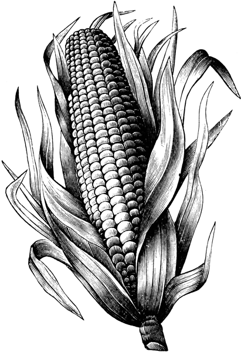

El bollo es maíz molido y hecho masa, hacen unos trozos y los envuelven con hojas de plátano o achira que en tamaño y hechura parece una libra de tabaco en polvo envuelta con su papel. Esto lo cuecen al vapor del agua como el sancocho. La arepa es la misma masa de maíz hecho tortilla y asada en la callana. El tamal es la misma masa de maíz y de ella hacen pasteles, metiendo adentro pedazos de tocino y jamón con mucho ají molido. Esto se muele fresco y se hace masas, la gente culta suele freírlo con manteca. Frito y no frito siempre se saca de ello un plato a la mesa, y sobre lo sobrado que allí meten en sus guisos y portajes, cada uno toma su cuchara del plato, y yo decía; esto es comer rabiando.
Fray Juan de Santa Gertrudis.
Maravillas de la Naturaleza, (¿1771?).

Los tamales y las arepas —pan de los indios, como les llamaban los conquistadores— eran platos prehispánicos que alcanzaron cierto grado de refinamiento en las técnicas culinarias. Ambos constituyen una fuerte e ininterrumpida tradición que se ramificó e incorporó diversos ingredientes, sin perder su esencia —la envoltura en hojas para el caso de los tamales, la harina de maíz en el caso de las arepas—.
La masa de estas arepas se hace con harina de maíz porva o amarillo, agua, mantequilla y sal, hasta dar la consistencia deseada. Se hacen redondas y se ponen a asar en una parrilla. Antes de que terminen de asarse se sacan y se parten en dos, y se les agrega cuajada o queso entre las mitades. Se regresan a la parrilla por unos diez minutos, volteándolas para que se calienten parejas y se sirven.
Para nueve huevos batidos, media libra de azúcar bien molida y muy seca, poniendo dos libras al sol. Este batido se tuesta en arepas. Luego se mezcla bien todo, ya tostado, con una libra de almidón de sagú, se engrasa un molde y se mete al horno como para cocinar bizcochuelos.
Del recetario familiar
de Germán Pardo Rojas.
En el Valle y Cauca las llaman hojaldras u hojuelas. En Bogotá se servían en los almuerzos y comidas como «principio de dulce».
1½ tazas de harina de trigo
1 cucharada de mantequilla
1 cucharadita de azúcar
1 cucharadita de sal
½ cucharadita de polvo de hornear o bicarbonato
Jugo de media naranja
Se amasa media libra de harina de trigo con una cucharada de mantequilla, se le agrega una cucharadita de azúcar, una cucharadita de sal y el jugo de media naranja. Se amasa bien; si queda muy dura se le pone media taza de agua tibia. Se deja reposar esta masa durante ½ hora.
La masa se extiende en la tabla de amasar enharinada con el rodillo —también enharinado— y se cortan las arepuelas en tiras de 15 a 20 centímetros de largo, y 5 centímetros de ancho, con cortes diagonales. Se fríen en aceite bien caliente. Se espolvorean con azúcar al momento de servir.
2 libras de cuajada fresca
1 taza de harina de maíz blanco precocido
1 taza de maicena
4 huevos
1 taza de azúcar o ½ taza de melaza
1 taza de mantequilla a temperatura ambiente
1 cucharadita de polvo de hornear
1 cucharadita de sal
½ taza de uvas pasas
¼ de cucharadita de clavo en polvo
¼ de cucharadita de canela en polvo
¼ de cucharadita de vainilla
Ameros de mazorca
Se bate la mantequilla con el azúcar y se le agrega la cuajada rallada, la maicena, la harina de maíz, el polvo de hornear, la sal y las especias. Se baten las cuatro claras de huevo a punto de nieve hasta que tengan consistencia y se agregan. Por último se le añaden las yemas batidas.
Se lavan muy bien los ameros para armar los envueltos colocándole dos cucharaditas de masa y envolviéndolos en pequeños paquetes.
Se cocinan en una olla con agua unos 45 minutos, teniendo cuidado de que no se quemen y que la olla no esté muy llena de agua. Se pueden servir fríos o calientes.
Cuenta Rodríguez Freyle en El Carnero (1636), que Juan Roldán, conocido como «el D’Artagnan de Bogotá», mandó a una pastelería que hiciesen dos empanadas para llevarle a don Diego de Torres, cacique de Turmequé, quien a la sazón estaba preso por órdenes del visitador general Monzón. En una de ellas escondió la lima que liberaría al indígena defensor de los derechos de su gente y precursor de la Independencia.
3 tazas de harina de maíz precocido amarillo
3 tazas de caldo de pollo o de gallina
Aceite, cebolla larga picada, tomate, ajo, sal, pimienta, tomillo, laurel.
1 taza de carne molida de res
4 papas criollas peladas y sudadas
Ají para servir
Se prepara la masa para las empanadas con la harina y el caldo caliente. Se amasa cuando este frío: si se desea le puede agregar una cucharadita de color al caldo. Aparte, se prepara el guiso con el aceite, cebolla, tomate, ajo, sal y condimentos. Se deja sofreír la cebolla y el tomate. Se agrega la carne y se revuelve para que no se vuelva bolas. Al final, se le adicionan las papas criollas sudadas vueltas puré. Se arman las empanadas colocando una cucharadita de relleno. Se tapan y se sellan con un poco de agua. Se fríen en aceite bien caliente para servirlas con rodajas de limón y ají.
En la lengua muisca se conocían con el nombre de ie bun. Ie corresponde a la harina de maíz, y bun es la palabra genérica para describir los bollos de masa en general. De la misma manera, las arepas o «pan de indios» se conocían con el nombre de ie fun. Fun significa «pan de maíz».
Para 10 mazorcas grandes desgranadas, bien molidas y cernidas en armero, ½ libra de cuajada fresca bien molida o queso campesino, ¼ de taza de mantequilla, una taza de azúcar o ½ taza de melao (que quede bueno de dulce), una cucharadita de sal, dos huevos (si se quiere), un poquito de arroz y una copita de ron o aguardiente. Puede incluirse, también, ½ taza de uvas pasas, clavos, canela y vainilla. Esta masa se hace con leche.
Para envolverlos, se lavan los ameros de las mazorcas y se arman los envueltos en pequeños paquetes. Se cocinan en una olla con agua unos 45 minutos e igual que los bollos de dulce. Se pueden servir fríos o calientes.
3 tazas de maíz pelado con ceniza y molido
¼ de libra de mantequilla
1 plátano hartón maduro cocido y molido
½ taza de melado de panela o melaza
1 cucharadita de sal
1 taza de agua
A la harina de maíz pelado con ceniza y molido se le agrega la mantequilla a temperatura ambiente, un plátano hartón maduro cocido y molido, media taza de melado de panela, una cucharadita de sal y una taza de agua, o hasta que dé la consistencia de masa. Se revuelve bien esta masa y se deja reposar una hora. Se arman los molidos en hoja de plátano previamente soasada y en forma de cono. Se cocinan en una olla con agua.
2 libras de maíz
½ panela raspada
2 tazas de cuajada exprimida o molida
½ libra de chicharrones de cerdo triturados
¼ de taza de guarapo fuerte
Ameros de maíz
Lejía
Se pone a cocinar el maíz con agua y lejía por una hora y media o hasta que quede blando. Se saca y se pone en agua fresca durante dos días. Se escurre y se muele junto con la cuajada, los chicharrones, la panela y el guarapo. Se pone la masa al sol para que suba. Se sacan porciones y se ponen en los ameros, se envuelven, se amarran y se ponen a cocinar en suficiente agua hirviendo durante 30 minutos. Se deben poner algunos ameros en el fondo de la olla para evitar que se peguen.
Según estudios de la Organización de las Naciones Unidas para la Agricultura —fao—, la arracacha (Arracacia xanthorrhiza) es una raíz muy antigua, incluso más que la papa. Existen datos generales sobre su consumo en la zona muisca, y además se han encontrado
especies nativas como la A. pennelli Constance en Bogotá.
Lucía Rojas de Perdomo.
Cocina prehispánica, 1994.
2 libras de arracacha sudada en agua
½ libra de yuca sudada en agua
½ libra de carne pulpa de res cocida y molida
1 taza de arroz blanco cocido
¼ de libra de harina de trigo
¼ de libra de arvejas verdes
2 cucharadas de aceite
2 tomates
1 cebolla cabezona
Sal, pimienta, laurel y tomillo al gusto
Se cocinan las arracachas con sal, se escurren y se muelen cuando estén frías para volverlas puré. Se amasan a mano con un poquito de aceite para que quede una pasta suave al tacto. Lo mismo se hace con la yuca, que se suda sin fibras y se revuelve bien con la masa de arracacha. Aparte se prepara un guiso con cebolla, tomate y aliños y se le agrega la carne molida, las arvejas y el arroz. Para armar los pasteles se amasan como arepas y se les coloca en el centro una cucharada de relleno del guiso con la carne. Se cierran y se pasan dándoles un bote por la harina de trigo. Se fríen en aceite bien caliente.
El domingo era otra cosa; aquel día se
almorzaba precisamente tamales.
Josefa Acevedo de Gómez.
“Santafé”, en Museo de cuadros
de costumbres, 1886.
El viajero escocés John Steuart, que llegó a Bogotá en marzo de 1836 y retornó a Estados Unidos un año más tarde, tiene la siguiente descripción del tamal: «Parece un pastel de manzana y es hecho de trozos de cerdo, sazonado como la carne seca y bien rodeado de manteca de cerdo, todo encerrado en una gruesa pasta y cocido».
[Para 20 tamales]
2 libras de costilla de cerdo
1 gallina
2 varas de longaniza (de Sutamarchán y de la roja)
1 libra de tocino
½ libra de garbanzos secos dejados en agua
la noche anterior
½ libra de aceitunas deshuesadas (opcionales)
¼ de libra de alcaparras
¼ de libra de ciruelas pasas
2 libras de harina de maíz corriente no precocido
Ajo, cebolla larga y cebolla cabezona
1 libra de arroz seco
Hojas de chisgua lavadas muy bien, desvenadas y soasadas.
Pita para amarrar
Se cocinan y se pican todas las carnes, inclusive la de gallina. Se pican las cebollas, se cocinan los garbanzos y en el cocimiento de las carnes y de la gallina se desata la harina de maíz previamente cernida, poniéndole antes comino y pimienta al cocimiento. La harina se desata en agua fría antes de agregarle el caldo de las carnes, que también debe estar frío. En otra vasija se revuelven los garbanzos con el arroz cocido, la cebolla picada, y se revuelve todo con la masa. Si esta mezcla se nota espesa (pesada) se le pone un poco de manteca de cerdo derretida.
Para hacer el tamal se toman 2 o 3 hojas, se pone encima un pedazo de costilla, un pedazo de longaniza, un pedazo de longaniza roja, un trozo de gallina, las aceitunas, una ciruela pasa, un trozo de cebolla cabezona, un diente de ajo, un poquito de uvas pasas, un trozo de tocino, alcaparras y encima de esto unas dos cucharadas de masa. Se envuelve y se ata con la pita.
En una olla a la a que se le pone una malla o maderos haciéndoles «cama» y con agua hirviendo se ponen a cocinar, teniendo cuidado de colocarles agua hirviendo y sin dejar que se queme la olla, hasta que estén cocinados, más o menos una hora hirviendo.
La vecindad de Cundinamarca con Tolima, Meta y Casanare, departamentos productores de arroz, influye en el gusto y uso de este ingrediente en la cocina del altiplano. El arroz se utiliza en la elaboración de panes, arepas, tamales, indios, empanadas, envueltos, sopas, masatos, chichas, dulces, tortas, etc.
3 tazas de arroz blanco cocido
¼ de libra de mantequilla
1 taza de queso campesino o de cuajada rallada
½ taza de melao de panela
1 cucharadita de sal
1 taza de agua
Se cocina el arroz con una taza de agua más de la corriente. Se le agrega la mantequilla, el melao de panela, una cucharadita de sal y una taza de agua, hasta que dé la consistencia de masa. También se le puede añadir huevos. Se le agrega el queso campesino rallado o la cuajada. Se revuelve bien esta masa y se deja reposar una hora. Se arman los tungos en hojas de bihao o platanillo secas y en forma de cono. Se cocinan al vapor. No se les debe destapar hasta que no estén bien cocinados.